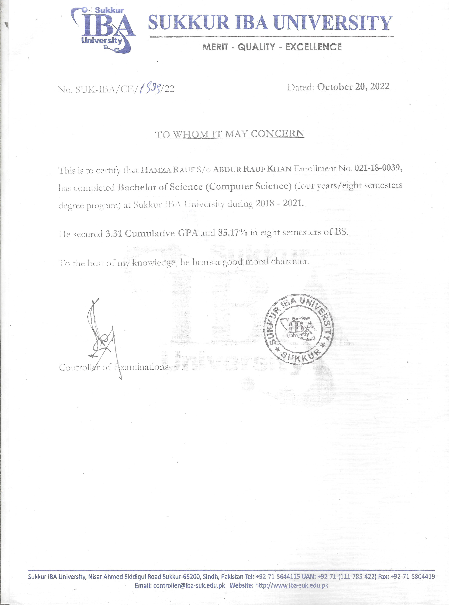

Hamza Rauf
Senior Software Engineer and AI Researcher
6+ years building AI, cloud, and high-reliability software systems.
GRE 331 and IELTS 7.0.
2+ years of research experience on efficient AI and ML-based modeling.
Published Q1 work on deployable AI for constrained and scientific environments.
Interested in green IoT networks, LoRaWAN, SDN, edge intelligence, and self-healing systems.
Meeting with Dr. Ahyoung Lee about how my AI, systems, agent, and network-security background can support green communications, LoRaWAN, SDN, and edge/fog networking research.

Who I Am
ii.
Hamza Rauf - Senior Software Engineer and AI Researcher focused on efficient AI, reliable systems, and network-aware intelligence that can operate under real deployment constraints.




331
GRE score, with IELTS 7.0 and a B.S. in Computer Science from Sukkur IBA University.
Top 5%
Top 5% of my class, with CGPA 3.31 / 85% and a strong base in algorithms, AI, networks, and enterprise systems.
6+
Years of AI and software experience across backend systems, cloud, automation, observability, and production deployment.
L3BN fit
Research discipline, practical engineering, efficient model training, network-security experience, and mentoring.
Evidence of readiness
iii.
Academic and research readiness
Academic proof
- Won a fully funded merit scholarship as one of the top 100 students in the country.
- Earned distinction in 24 courses, including algorithms, AI, data structures, and enterprise application development.
- Received a professional job offer before graduation.

Research proof
- Worked as a Research Assistant with Dr. Umair Khan, a Stanford top 2% scientist.
- Published first-author Q1 work on resource-constrained AI and co-authored Q1 work on ML surrogate modeling.
- Comfortable with literature review, experiment design, evaluation metrics, LaTeX, Atlas.ti, SPSS, and reproducible reporting.


Recognition
- Employee of the Year in both 2023 and 2024.
- Section leader at Stanford Code in Place 2024.
- Part of the winning team at the NETSOL AI Hackathon.
Published work
iv.
Research experience in efficient AI systems


Current research
v.
From small LLMs to edge network intelligence

Current paper from my CV
Embodied Emotion Classification via Small LLMs Using Prompting Strategies
Current question
- Which prompting strategy works best for small LLMs when data is noisy, indirect, and resource-limited?
- Compares zero-shot, k-shot, chain-of-thought, and chain-of-verification prompting.
- Measures macro and per-class F1 under limited compute rather than assuming large-model availability.
The deeper skill is evaluating compact intelligence under uncertainty, which is relevant to smart gateways, sensor logs, and edge decision support.
How I connect it to Professor Lee's research
- Compact AI can support edge/fog gateways where power, latency, and bandwidth matter.
- Prompting and evaluation can structure sensor logs, network events, and fault descriptions.
- Verification-first agents can avoid unsafe autonomous remediation in network systems.
- The same mindset can support RL-enhanced scheduling and self-healing IoT network management.